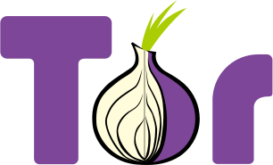

Downloads with confirmed links are marked with a green ✓
About us
Tor Browser Bundle
Site: torproject.org
Description ∇
The Tor Browser lets you use Tor on Windows, Mac OS X, or Linux without needing to install any software. It can run off a USB flash drive, comes with a pre-configured web browser to protect your anonymity, and is self-contained (portable).
Download ∇
Windows ✓
SHA256: 3a2e05304345936fd713b638612088fa0914102389c15c7bf7aa1d74803e5db8
MD5: d4b74112374b75b38a8174b1d37086fe
OSXMD5: d4b74112374b75b38a8174b1d37086fe
SHA256:
MD5:
Linux 32-bitMD5:
SHA256:
MD5:
Linux 64-bitMD5:
SHA256:
MD5:
MD5:
gpg4usb
Site: gpg4usb.org/
Description ∇
gpg4usb is a very easy to use and small portable editor to encrypt and decrypt any text-message or file you want.
Download ∇
Zip ✓
SHA256: 3c9643b219ef0d8ba6d69cedefbca815e22107f92dcb1003314cc539fc984f1c
MD5: ac624516b04f50a97780c89bc7d70a64
MD5: ac624516b04f50a97780c89bc7d70a64
Veracrypt
Site: veracrypt.codeplex.com/
Description ∇
Veracrypt is a disk encryption program intended to be a successor to TrueCrypt.
VeraCrypt adds enhanced security to the algorithms used for system and partitions encryption making it immune to new developments in brute-force attacks.
VeraCrypt also solves many vulnerabilities and security issues found in TrueCrypt.
VeraCrypt adds enhanced security to the algorithms used for system and partitions encryption making it immune to new developments in brute-force attacks.
VeraCrypt also solves many vulnerabilities and security issues found in TrueCrypt.
BleachBit
Site: bleachbit.org
Description ∇
BleachBit quickly frees disk space and tirelessly guards your privacy. Free cache, delete cookies, clear Internet history, shred temporary files, delete logs, and discard junk you didn't know was there. Designed for Linux and Windows systems, it wipes clean a thousand applications including Firefox, Internet Explorer, Adobe Flash, Google Chrome, Opera, Safari,and more. Beyond simply deleting files, BleachBit includes advanced features such as shredding files to prevent recovery, wiping free disk space to hide traces of files deleted by other applications, and vacuuming Firefox to make it faster. Better than free, BleachBit is open source.
Download ∇
Windows ✓
SHA256: 95767e40c22c9fe974d34941a6b08e24ab1cd50c7f00902b2a20afc01eed67bc
MD5: be5e40fa0e0191fa9dca3b4262c4f51d
Ubuntu 16.04MD5: be5e40fa0e0191fa9dca3b4262c4f51d
SHA256:
MD5:
Linux Mint 17/Ubuntu 14.04MD5:
SHA256:
MD5:
MD5:
BitMessage
Site: bitmessage.org
Description ∇
Bitmessage is a P2P communications protocol used to send encrypted messages to another person or to many subscribers. It is decentralized and trustless, meaning that you need-not inherently trust any entities like root certificate authorities. It uses strong authentication which means that the sender of a message cannot be spoofed, and it aims to hide "non-content" data, like the sender and receiver of messages, from passive eavesdroppers like those running warrantless wiretapping programs.
Retroshare
Site: retroshare.github.io
Description ∇
Retroshare creates encrypted connections to your friends. Nobody can spy on you. Retroshare is completely decentralized. This means there are no central servers.
Putty
Site: putty.org/
Description ∇
PuTTY is an SSH and telnet client, developed originally by Simon Tatham for the Windows platform. PuTTY is open source software that is available with source code and is developed and supported by a group of volunteers.
Download ∇
 VLC
VLC
Site: videolan.org/vlc
Description ∇
VLC is a free and open source cross-platform multimedia player and framework that plays most multimedia files as well as DVDs, Audio CDs, VCDs, and various streaming protocols.
ZeroNet
Site: zeronet.io
Description ∇
Decentralized websites using Bitcoin crypto and the BitTorrent network
Download ∇
 Ricochet
Ricochet
Site: ricochet.im
Description ∇
Ricochet is a different approach to instant messaging that doesn’t trust anyone in protecting your privacy.
Download ∇
Tixati
Site: tixati.com
Description ∇
Unlike many other torrent clients (*cough* uTorrent), we take pride in saying NO to spyware and adware. Tixati installs and uninstalls cleanly and doesn't add anything extra to your system. Our software is fully self-contained and doesn't have annoying dependencies on Java or .Net frameworks.
Download ∇
tar.bz2 ✓
SHA256: 99ee6ee68a155fd26273dd088ef815672934d4680e3cf53aea4654ee9c159007
MD5: 8ff86a6b6e809c4b87cf41dbd9f8b7b7
MD5: 8ff86a6b6e809c4b87cf41dbd9f8b7b7
KeePass
Site: keepass.info
Description ∇
KeePass is a free open source password manager, which helps you to manage your passwords in a secure way. You can put all your passwords in one database, which is locked with one master key or a key file. So you only have to remember one single master password or select the key file to unlock the whole database. The databases are encrypted using the best and most secure encryption algorithms currently known (AES and Twofish).
Download ∇
Zip ✓
SHA256: 6156e1f412659a05b829d0e203881f5721239c9e1434e3c1a3f57ed7caca8c1f
MD5: a22b67dc26a3e9a9b1decc19847bf52f
MD5: a22b67dc26a3e9a9b1decc19847bf52f
Android:
ChatSecure
Site: chatsecure.org
Description ∇
ChatSecure is a free and open source messaging app that features OTR encryption over XMPP. You can connect to your existing accounts on Facebook or Google, create new accounts on public XMPP servers (including via Tor), or even connect to your own server for extra security.
Unlike other apps that keep you stuck in their walled garden, ChatSecure is fully interoperable with other clients that support OTR and XMPP, such as Adium, Jitsi, and more.
Unlike other apps that keep you stuck in their walled garden, ChatSecure is fully interoperable with other clients that support OTR and XMPP, such as Adium, Jitsi, and more.
Download ∇
Apk ✓
SHA256: 36d7d71c8a2115bdd2bd63bb639af286ee3242cce11cdb5c53378d1a7f35528e
MD5: 746be611a420d8c9e5e2c3c2ab6748c2
MD5: 746be611a420d8c9e5e2c3c2ab6748c2